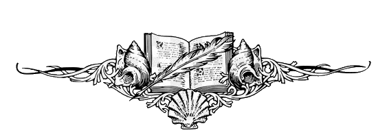

Scarlet Horizons
Treasure
• Beckette, Faramund
◦ none yet
• d'Rosenberg, Auriochos (Lines 1-4 total 25.9946 XP cumulative when converted)
◦ Line 4: 11.76 gp-worth of treasure frogling/lizzie party {10.32 XP when converted}
◦ Line 3: 1.3 gp-worth of chroma {1.3 XP when converted}
◦ Line 2: the red cuprous is worth 0.1846 gp {0.1846 XP when converted}
◦ Line 1: 12.75 gp-worth of electrum {12.75 XP when converted}
• d'Slaytonthorpe, Matthias (25.9946 XP cumulative when converted)
◦ Line 4: 11.76 gp-worth of treasure frogling/lizzie party{10.32 XP when converted}
◦ Line 3: 1.3 gp-worth of chroma {1.3 XP when converted}
◦ Line 2: the red cuprous is worth 0.1846 gp {0.1846 XP when converted}
◦ Line 1: 12.75 gp-worth of electrum {12.75 XP when converted}
• SixIrons, Deatre
◦ none yet
• Su Tao, Fong
◦ none yet
Unconverted:: Between the two of them, the lizardman — who attacked Aury and Mattie in the bog on the 22 Oct. 204 PR — have thirteen chroma, no royals, and a dozen red cuprous copper pieces.

Unconverted: Electrum pieces carried by individual froglings that attacked Matthias and Aury in the Bog on 22 Oct. 204 PR: 7, 5, 3, 8, 9, 2, 2, 1, 7, 7. This totals 51 EP — electrum is rare, a currency of fallen kingdoms.
Electrum is an alloy of silver and gold, and prized by magic-users as a material from which to construct wands and rings. Our heroes may be able to get more than the going market-rate conversion for these coins of fallen kingdoms, should they seek out various magic-users.
These 51 electrum pieces are 25.5 gp-worth of treasure. Of course, Matthias and Aury will each get only half of that amount.